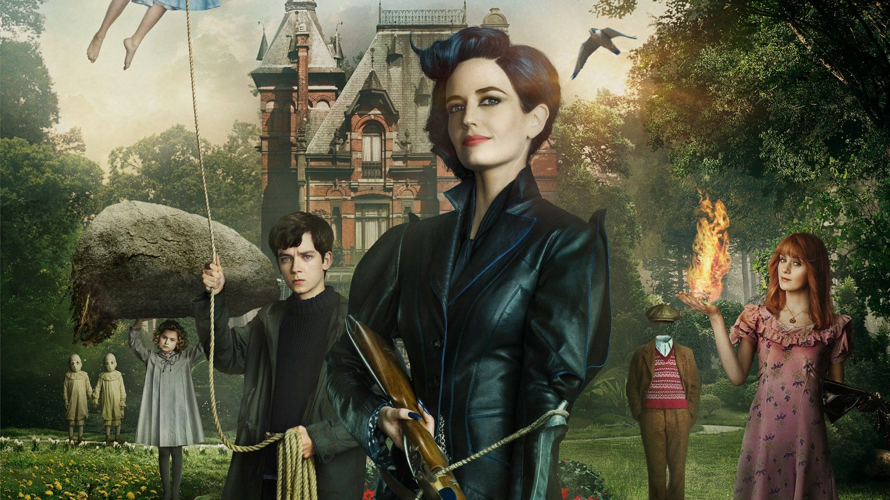

Miss Peregrine y los Ninos Peculiares84% de coincidencia 2 h 29 minSiguiendo un misterio que le legó su abuelo, un adolescente encuentra en la costa de Gales una isla en la que habitan niños poseedores de poderes especiales, y los terribles enemigos que los amenazan. y los terribles enemigos.REPRODUCIRTRAILERProtagonistas: Eva Green, Asa Butterflie, Eddie Redmay. Genero: Fantasia.
 REPRODUCIR
TRAILER
REPRODUCIR
TRAILER